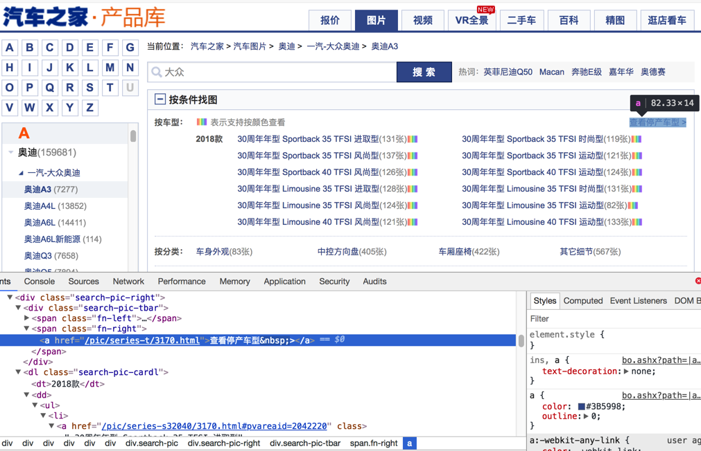
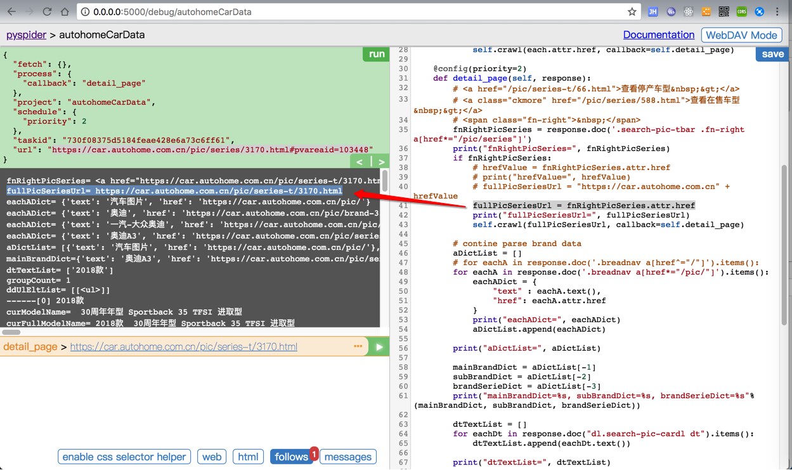
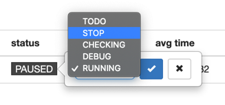
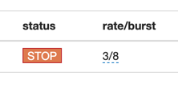
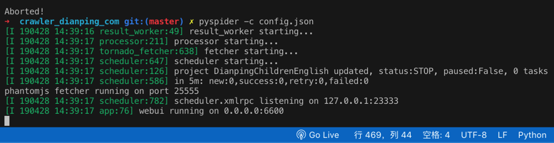
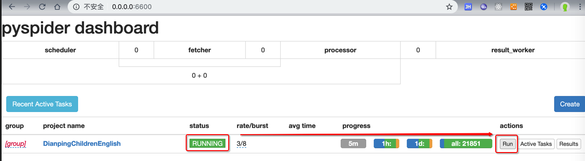
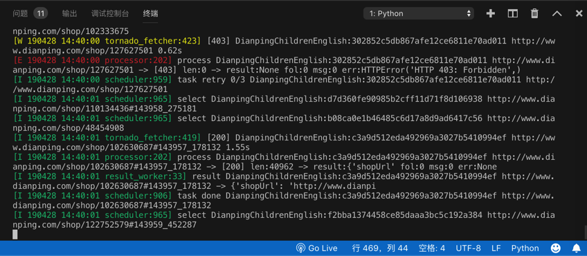
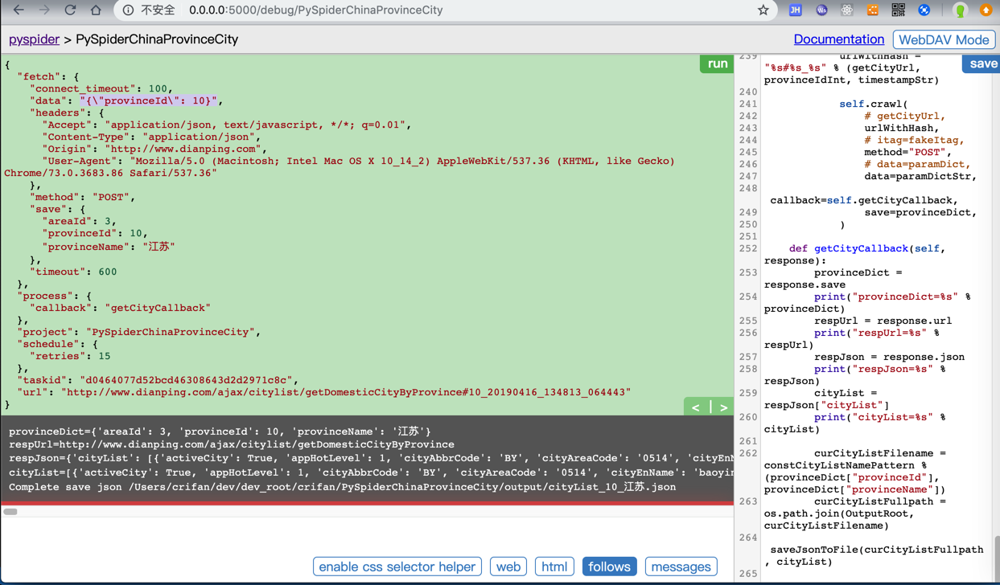

PySpider常见的坑
关于折腾PySpider期间，遇到很多或大或小的坑，常见和具体细节相关的坑，已记录到对应部分中了。
此处再继续整理出，其他的一些常见的坑。
HTTP 599 Operation timed out after milliseconds with out of bytes received
类似现象：
after 120001 milliseconds with 0 bytes receive
after 120000 milliseconds with 1723300 out of 2343850 bytes received 120.00s
解释：
-> 意思是：超时了（超过设置的最大超时时间了），但是只下载了总共数据的其中一部分
-> 重点是后半句，意思是可以下载到数据的，只是直到超时都还没下载完全
-> 这种情况的最大可能原因就是：网速太慢
-》所以
解决办法
根本办法：换个更快的网络
比如，我公司是1MB/s的网络，家里是10MB/s的网络，换到家里下载，就不会出现这个问题了
临时的规避的缓解的办法：增大延迟timeout （ +增大其他容错参数connect_timeout, retries）
- 给单个
self.crawl增大参数self.crawl(urlToDownload, callback=self.downloadFileCallback, connect_timeout=100, timeout=600, retries=15, save=fileInfo) - 或：增大全局参数
class Handler(BaseHandler): crawl_config = { "connect_timeout": 100, "timeout": 600, "retries": 15, }
参数含义解释详见官网：
css的选择器不工作
背景：网页中的源码本来是：
<a href="//car.autohome.com.cn/pic/series/3170.html#pvareaid=103448">
或者类似的：
href="/pic/series-t/3170.html"

然后去写css选择器：
a[href^="//car.autohome.com.cn/pic/series/"]
但是却无法匹配
原因：PySpider内部的css选择器用的是PyQuery，其默认把href的路径，加上了对应的host，所以此时获取到的html实际上变成了：
<a href="https://car.autohome.com.cn/pic/series/3170.html#pvareaid=103448">
详见：
Reponse.doc() 返回的就是一个PyQuery的对象 Links have made as absolute by default
猜测：估计是为了方便小白用户，所以默认加上了host，但是坑了其他人啊。
解决办法：此处被逼的css选择器写法只能改为：
a[href*="pic/series/"]
或类似的代码：
fnRightPicSeries = response.doc('.search-pic-tbar .fn-right a[href*="/pic/series"]')
fullPicSeriesUrl = fnRightPicSeries.attr.href
已经得到的是，加了host/domain的绝对路径了：
fullPicSeriesUrl= https://car.autohome.com.cn/pic/series-t/3170.html

详见： 【已解决】pyspider中的css选择器不工作 – 在路上
Error Could not create web server listening on port 25555
原因：对应的25555端口被占用了
根本原因：之前的PySpider没有正常的彻底的被关闭，所以残留了。
解决办法：彻底kill干掉之前的PySpider的进程即可。
举例：
普通Linux类系统，用：
- 找到占了25555端口的进程的id：
ps aux | grep 25555 - 再去杀掉进程：
kill process_id -9
即可。
如果是Mac中，则用lsof
➜ AutocarData lsof -i:25555
COMMAND PID USER FD TYPE DEVICE SIZE/OFF NODE NAME
phantomjs 46971 crifan 12u IPv4 0xe4d24cdcaf5e481f 0t0 TCP *:25555 (LISTEN)
➜ AutocarData kill 46971
PAUSED后无法立刻继续运行
当PySpider在爬取期间发现太多的url都是retry重试，则会变成PAUSED

猜测：其内部有比较智能的判断，推测是断网或者网络异常了，所以暂停下载
通过直接把PAUSED改为STOP

或改为了RUNNING

但是刷新一下页面，就还是显示PAUSED
-> 不能立刻开始继续下载
-> 往往要等很长时间之后才能继续下载
而如果自己想要立刻继续下载，经过研究，可以：
- 先改为STOP
- 
- 停止PySpider
- Control+C停止
- Control+C停止
- 重新运行PySpider
- 
- 再改为RUNNING，点击Run
- 

即可立刻继续运行了

post时data传递dict有时候不行
比如
crifan/PySpiderChinaProvinceCity
getCityUrl = "http://www.dianping.com/ajax/citylist/getDomesticCityByProvince"
for eachProvince in provinceList:
print("eachProvince=%s" % eachProvince)
provinceIdInt = eachProvince["provinceId"]
paramDict = {
"provinceId": provinceIdInt,
}
paramDictStr = json.dumps(paramDict)
...
self.crawl(
# getCityUrl,
urlWithHash,
# itag=fakeItag,
method="POST",
# data=paramDict,
data=paramDictStr,
callback=self.getCityCallback,
save=provinceDict,
)
data要传递json变量paramDict去json.dumps后的字符串paramDictStr才可以：

如果换成dict：
getCityUrl = "http://www.dianping.com/ajax/citylist/getDomesticCityByProvince"
for eachProvince in provinceList:
print("eachProvince=%s" % eachProvince)
provinceIdInt = eachProvince["provinceId"]
paramDict = {
"provinceId": provinceIdInt,
}
paramDictStr = json.dumps(paramDict)
...
self.crawl(
# getCityUrl,
urlWithHash,
# itag=fakeItag,
method="POST",
data=paramDict,
# data=paramDictStr,
callback=self.getCityCallback,
save=provinceDict,
)
且已经指定了全局配置crawl_config中的headers的Content-Type是application/json
-> 以为PySpider的self.crawl会自动把dict类型的data去json dump成字符串，结果却是：
只保留了key和value：
"data": "provinceId=10",
导致报错：
requests.exceptions.HTTPError: HTTP 400: Bad Request
之前还遇到过一个类似的例子：
SelfReadingUrl = "http://www.xxxxxxxxx.cn:83/Reading.svc/selfReadingBookQuery2"
def on_start(self):
jValueTemplateSelfReading = "{\"userId\":\"%s\",\"fieldName\":\"\",\"fieldValue\":\"全部类别\",\"grades\":\"\",\"levels\":\"\",\"supportingResources\":\"有音频\",\"offset\":%d,\"limit\":%d}"
paramDictSelfReading = {
"curUrl": SelfReadingUrl,
"offset": 0,
"limit": DefaultPageSize,
"jValueTemplate": jValueTemplateSelfReading
}
self.getBookQuery2(paramDictSelfReading)
def getBookQuery2(self, curParamDict):
...
jValueStr = jValueTemplate % (gUserId, offset, limit)
jcJsonDict = {
"J": jValueStr,
"C": 0
}
jcJsonDictStr = json.dumps(jcJsonDict)
......
self.crawl(curUrlWithHash,
itag=fakeItagForceRecrawl, # To force re-crawl for next page
method="POST",
# data=jcJsonDict,
data= jcJsonDictStr,
# callback=curCallback,
callback=self.getBookQuery2Callback,
headers=curHeaders,
save=curParamDict
)
其中也是：
给data参数用了json去dump后的字符串变量：jcJsonDictStr
而不是json的dict变量：jcJsonDict
才最终正确获取到数据的。